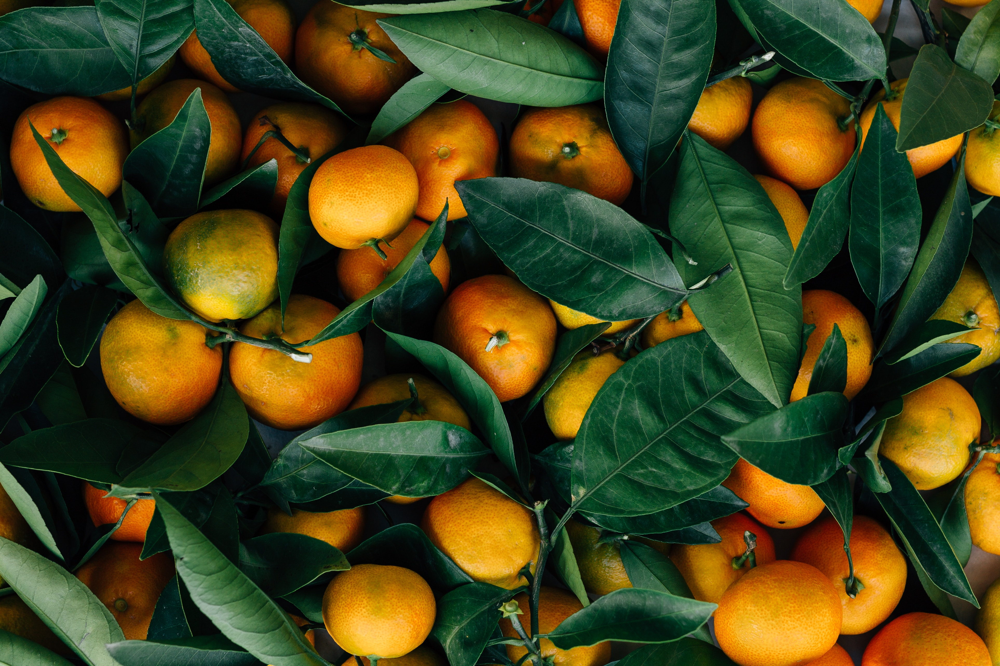

fruit - Orange
- Nectarine
- Orange
- Pineapple
Orange
귤속에 속하는 과일이다. 거의 공에 준하는 균일한 둥근 모양에 껍질이 두껍고 단단해 귤과 달리
맨손만으로 깔끔하게 껍질 까기가 어려운 편이다.
과육의 모양새는 귤과 비슷하나 귤보다 조금 더 크고 껍질이 질깃해서 약간 단단하다는 느낌이 든다.

귤이 새콤달콤하고 쓴 맛이 거의 안 느껴진다면 오렌지는 새콤달콤씁쓸한 느낌.
신 맛보다는 단맛과 쓴맛의 느낌이 좀 더 강하지만 쓰다고 못 먹을 수준은 아니다.